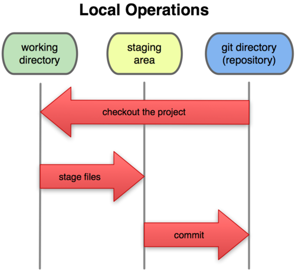
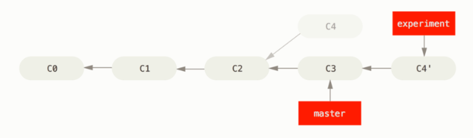

[TOC]
git 操作笔记
基本概念

git中的文件有3种状态.
modified(已修改), staged(已暂存), commited(1已提交)
相应的git项目中有3个文件流转的工作区域
- workding directory 工作区
- staging area 暂存区
- repository 仓库
git revision 版本
每次 commit 会产生一个 SHA-1
可以使用指定的 SHA-1 值来指代一次提交
Short SHA-1
SHA-1有40个字符, 可以使用前几个字符(最少需要4个)来指定 commit,
git log 查看commit记录
- git log --pretty=oneline 以一行来查看
128f22e73214b375d8cbdd0249df08a86e234459 开发票种聚合
c71de8f2da3d03d75f8893ab3ff63f62626313fa publish branch: master
7711685bcf82c1c90f26b24b6042472a64c839e3 Merge pull request #83 in HFE/hotel-hfe-luban-crm from zc/weather-tip to master
8ee45a4ba841d549d9c7918229beb0037478e05d 更新crm-weather-tip
33e0550e184727e46964621ff256e31ec5336b7c 更新
- git log --stat 输出一个diffstat, 显示文件修改的简要统计.
commit dd76ced3b8fba1349b57a2c1845d04e07ab25cd6
Author: xuzhichao03 <xuzhichao03@meituan.com>
Date: Wed Jun 21 17:19:58 2017 +0800
test-st
build/staging/common.28cee198b775c1a725b8.js | 10 ++++++++++
build/staging/common.531aa76be24862457357.js | 10 ----------
build/staging/index.html | 2 +-
...585cc.js => poi.bundle.c3b40363bc680ca3cbea.js} | 10 +++++-----
build/staging/poi.html | 2 +-
build/staging/workbench.html | 2 +-
repo-info.json | 2 +-
.../subView/baseInfo/baseInfo.controller.js | 1 -
src/app/poi/poiDetail/subView/tradeInfo/index.html | 2 +-
.../subView/tradeInfo/tradeInfoController.js | 2 +-
10 files changed, 21 insertions(+), 22 deletions(-)
git push
切换远程分支
$ git push origin :develog To git@github.com:schacon/simplegit.git
- [deleted] serverfix
git push [远程名] [本地分支]:[远程分支] 语法， 如果省略 [本地分支]，那就等于是在说“在这里提取空白然后把它变成[远程分支]”
git checkout 切换分支或者恢复工作区的文件
git checkout [\]
切换分支, 如果本地没有该分支, 而remote有, 则会切换到新分支并关联远程分支, 相当于 git checkout -b \
git checkout -b \ [\]
创建并切换到新分支, 如果指定start point(commit hash)则会从该commit切换出去, 新的分支的最后一个commit为start point指定的commit
git checkout [-p|--patch] [\] \ 恢复一个文件或目录
pathspec: 文件或文件夹路径 tree-ish: tag, tree 或 commit, 默认是当前的commit
如果有 -p参数 或者 pathspec, 则不会切换branch, 而是从 tree-ish指定的commit|tag中提取该文件|目录到工作区.
如:
# 从index commit 中提取README.md 文件当当前的working tree.
git checkout README.md
# 清除当前工作区的更改
git checkout .
git merge 合并分支
如master分支commit历史为 A -> B -> C -> D dev分支commit历史为 A -> B -> E -> F -> G
在dev分支要合并master分支. 那么
git checkout dev // 切换到dev分支
git merge master // 合并master分支
# 如果有冲突会产生冲突文件. 解决完冲突后. 再建立新的commit
git add .
git commit -m merge-master-to-dev
# 那么此时dev的commit历史如下. 并入的master的历史会跟在分支节点的后面.
A -\> B -\> C -\> E -\> F -\> G -\> merge-master-to-dev
# 查看合并的提交及父提交的关系图
git log -10 --graph --stat --pretty=oneline
* e660fa47d3589c5cdfe45c881b54e74182bdac74 merge-dev-to-dev3
|\
| * 975ed1141c1a451dde940d814e321780f07a258e b
| | 1.md | 7 +++++++
| | 1 file changed, 7 insertions(+)
| * c6196205ac27f9721950dd0685e3c4170ba81ecd a
| | 1.md | 5 +++++
| | 1 file changed, 5 insertions(+)
| * 55b075a080fc851798e48ab1087cd398ee886185 dev2-m1
| | a.md | 11 +
| | b.md | 2223 +++++++++++++++++++++++++++++++++++++++++++++++++++++++++++++++++++++++++++++++++++++++++++++++++++++++++++++
| | 2 files changed, 2234 insertions(+)
* | 634b8742b03a9fe89da95051f93b70deffca5a19 e
| | 1.md | 4 ++++
| | 1 file changed, 4 insertions(+)
* | 7cdaffd5940d4d14b846b6c88225d405e59a6ffb d
|/
| 1.md | 6 ++++++
| 1 file changed, 6 insertions(+)
* 61a6d4132bbdaed67f48083cec82492c3e40fa2f dev2-2
| a.md | 4 +++-
| 1 file changed, 3 insertions(+), 1 deletion(-)
对于merge的commit, 如果reset到merge的分支, 则会回到刚merge的状态. 此时如果git checkout . 则会直接恢复到merge之前的状态. 虽然commit中有另外一个分支的commit历史, 但是并不会回到这些历史状态.
git rebase 衍合
可以参考 http://iissnan.com/progit/html/zh/ch3_6.html

git rebase \
用于把一个分支的修改合并到当前分支。
与merge的不同: merge 如果2个分支是发生了分叉, 则会生成一个新的分支, 该分支有2个父分支. rebase 如当前在dev分支, git rebase master. 则会以master的最后commit为基底分支逐个执行dev分支的commit, 并且可以合并commit提交. 然后再切到master分支, git merge dev 则可以生成一个干净的commit历史.
# rebase的流程
# 如下的分支, 当前在dev分支, 最终要合并到master分支
A---B---C dev
/
D---E---F---G master
# 执行 git checkout dev =\> git rebase master
# 则会查找到2个分支的共同父节点E, 以G为基底, 将 A, B, C 生成多个patch(补丁), 在G的基础上依次应用各个补丁, 遇到冲突会提示用户处理冲突, 若无冲突则自动合并并应用下一个补丁
# 冲突处理完通过
git add . //添加到暂存区
git rebase --continue // 继续下一个commit patch的应用.
# 取消 rebase
git rebase --abort
# rebase完成生成如下的记录. A', B', C' 这些commit可以通过 squash模式进行合并
A'---B'---C' dev
/
D---E---F---G master
# 将rebase后的分支合并到master
git checkout master
git merge dev
git rebase --onto master server client
取出client分支, 找出client和server分支的共同祖先之后的变化, 将这些变化以master的最后commit为基底重演一遍.
git rebase -i \
git rebase -i master // 在当前分支上 rebase master分支
interactive 交互式的执行rebase, 会打开命令编辑界面. 输入每个commit的合并执行策略. 保存退出后即开始执行.
如果没有分支参数
git rebase -i HEAD~4 重新录入last 4 commits, 可以将其合并为1个
合并当前分支的前4个commit为一个. 只合并commit message, 仍然会保留每个commit所做的文件变更.
或者 git rebase -i \
冲突处理
对于大部分的冲突git都可以自动处理. 需要手动处理的冲突包括:
- 文件冲突: 两个分支同时修改了同一个文件的同一部分.
- 树冲突: 两个分支同时修改了同一个文件的文件名.
冲突处理
- git merge --abort 取消merge
解决冲突. 打开冲突的文件, 手动解决冲突. 然后在 git add . => git commit
git diff 查看冲突的部分
diff --cc repo-info.json
index cfbf0d9,0c36e7c..0000000
--- a/repo-info.json
+++ b/repo-info.json
@@@ -16,6 -17,5 +17,10 @@@
"currentTag": true,
"toTest": [
"test01"
++<<<<<<< HEAD
+ ],
+ "timestamp": 1498113885407
++=======
+ ]
++>>>>>>> master2
}
树冲突处理 如 master分支有文件 1.md
# 从master切换分支tree1
git checkout -b tree1
mkdir 1
mv 1.md 1 // 把文件1.md 移动到 文件夹 1 下面
# 从master切换到分支 tree2
git checkout master
git checkout -b tree2
mkdir 2
mv 1.md 2 // 文件1.md 移动到 文件夹 2下面
# 合并产生冲突
git checkout tree1
git merge tree2
# 输出
CONFLICT (rename/rename): Rename "1.md"->"1/2.md" in branch "HEAD" rename "1.md"->"2/1.md" in "tree2"
Automatic merge failed; fix conflicts and then commit the result.
# 此时查看状态
git status
Unmerged paths:
(use "git add/rm <file>..." as appropriate to mark resolution)
added by us: 1/1.md
both deleted: 1.md
added by them: 2/1.md
# 冲突的解决
# 手动保留需要的版本, 并删除不需要的版本. 然后
git add.
git commit -m fix-conflict
冲突标记风格
通过 git config --add merge.style [value] 可以设置冲突的标记风格 可选值
- merge 默认. 以 \<\<\<\< 本地更改的版本 ==== 他人更改的版本 >>>> 来表示
- diff3 以 \<\<\<\< 本地更改的版本 ||||| 原始版本 ====== 他人修改的版本 >>>>> 来表示
# 文件冲突 ==== 前面是自己的分支, 后面是merge的分支
<<<<<<< yours:sample.txt
Conflict resolution is hard;
let's go shopping.
=======
Git makes conflict resolution easy.
>>>>>>> theirs:sample.txt
git commit
提交
git commit --amend 修改上次的commit信息
git blame
查看文件的修改记录
git blame README.md
git blame README.md
# 输出 该文件的修改历史记录
6f24c770 (weihanqing 2016-10-07 11:26:08 +0800 19) 访问前缀为 test...
^acad07f (weihanqing 2016-10-07 11:24:08 +0800 20)
8c25408b (xuzhichao03 2017-01-23 12:40:31 +0800 21) #### 发布st
849fa190 (xuzhichao03 2017-01-11 12:25:48 +0800 22)
6f24c770 (weihanqing 2016-10-07 11:26:08 +0800 23) 访问前缀为...
git tag
git 可以设置tag
创建tag
- git tag -a \
-m \ - git tag -f \
listing tag
- git tag -l // 展示tag名
- git tag -n \
- git show-ref --tags // 打印所有的 tag 及对应的 commit信息.
删除tag
- git tag -d \
推送tag到远程仓库
在git push 的时候默认不会推送tag信息
- git push origin v1.5 // 可以把 v1.5 tag 推送到origin仓库
- git push origin --tags // 推送所有的远程服务器没有的tag到远程服务器.
推送到远程服务器的tag 在git pull的时候会被.
tag 应用
- git show \
git diff
比较差异
git diff \
git 历史回溯
修改上次的commit
git commit --amend 只能修改上次的commit 信息, 由于提交了commit又想修改的情况比较多, 所以该操作相当于git提供的一个快捷修改方式.
git show-ref
List references in a local repository 查看仓库的引用
git show-ref --heads // 只列出heads git show-ref --tags // 只列出有tag的commit
git show-ref
# 输出
55b075a080fc851798e48ab1087cd398ee886185 refs/heads/dev
650848765a3a91ba8d5194583179dbbd88f1aa95 refs/heads/master
f183f36a8f21d23b99a7b21f47bf3f3e251476cf refs/heads/test
f95fc134bd6f8ebf141cb2e684a6e187e88aae03 refs/tags/tag1
1cec75aa0b3189a009a54d8916e004f58e9cf9ca refs/tags/tag2
608a7cc2984697e497c575e579a5171d3c08a326 refs/tags/tag3
git reflog 引用记录(reference logs)管理 reflog 信息
git reflog -5 HEAD // 输出最近的5次HEAD的指向改变历史
Detached HEAD 游离的HEAD
git checkout 可以进入历史记录的某个commit, 此时进入了一个detached branch. 可以做一些试验或者修改. 不会影响该branch的记录历史.
# 如当前master分支为
a -- b -- c (HEAD指向c)
|
tag v1.0
# master分支再提交一次commit则为
a -- b -- c -- d (HEAD指向master分支 d commit)
|
tag 'v1.0'
# 此时如果要切到commit b, 并且不指向任何分支. 可以通过以下方法.
git checkout master^^
# 或者
git checkout v1.0
# 经过以上操作, 此时
HEAD 指向commit b
|
a -- b -- c -- d (HEAD指向一个游离分支 [detached branch], commit b)
|
tag 'v1.0'
# 在当前分支再commit e, 此时的 commit e 只被HEAD引用, 而没有branch引用.
HEAD 指向commit e
|
e
|
a -- b -- c -- d (HEAD指向一个游离分支 [detached branch], commit e)
|
tag 'v1.0'
# 此时位于游离分支, 在游离分支也可以做所有的git操作, 但是如果切换到其它分支, 如 git checkout master. 则HEAD会指向master分支commit d
. 此时的commit e 没有被引用, 在下次git垃圾回收的时候会清除该游离分支上的commit.
# 通过在该游离分支commit e上创建一个新的分支, 或tag可以保存该游离分支的改变. 以下的3个操作都可以创建新的引用
git checkout -b foo // 创建新的分支foo引用commit e, 同时把HEAD指向foo分支(即切换到foo分支)
git branch foo // 创建foo新分支引用commit e, 仍然停留在当前分支, 不切换过去
git tag foo // 创建新tag foo. HEAD离开游离分支
# 如果离开了游离分支, 并且没有创建引用, 但是现在需要回到刚才的游离分支. 可以通过以下操作.
git reflog [-n] HEAD // 输出最近的n次引用变更记录, 找到刚才从游离分支切换出来的那个HEAD序号,比如是m
git checkout HEAD@{m} // 切换到刚才的游离分支
git log -g [-n] HEAD // 也可以输出引用的变更记录
git config 配置
git 配置有当前项目的配置文件 和 全局配置文件
设置默认编辑器
git需要编辑内容的时候会用系统默认的编辑器打开, 一般为 vi 可以自行配置
如把默认编辑器设置为 vscode 则执行下面的豫剧
git config --global core.editor "code --wait"
git config --global -e # 用vscode 打开全局的配置文件进行编辑
配置用户信息
设置全局的
$ git config --global user.name "John Doe"
$ git config --global user.email "john@doe.org"
设置本地仓库的
$ git config user.name "John Doe"
$ git config user.email "john@doe.org"
配置默认diff工具
打开配置文件 git config --global -e
在配置文件中加上, 此处设置diff工具为vscode
[diff]
tool = default-difftool
[difftool "default-difftool"]
cmd = code --wait --diff $LOCAL $REMOTE
此时执行 git difftool 则可以使用自定义的vscode来进行diff
filter-branch 修改历史记录中的文件
在历史 commit 中执行某个命令
命令使用:
git filter-branch [--setup <command>] [--subdirectory-filter <directory>]
[--env-filter <command>] [--tree-filter <command>]
[--index-filter <command>] [--parent-filter <command>]
[--msg-filter <command>] [--commit-filter <command>]
[--tag-name-filter <command>] [--prune-empty]
[--original <namespace>] [-d <directory>] [-f | --force]
[--state-branch <branch>] [--] [<rev-list options>…]
command 要执行的命令
--tree-filter
用来重写 tree 以及其内容,
Example
从所有的 commit 中删除文件名为 filename 的文件
git filter-branch --index-filter 'git rm --cached --ignore-unmatch filename' HEAD
例子2
从所有历史记录中删除某敏感文件
$ git filter-branch --force --index-filter \
'git rm --cached --ignore-unmatch PATH-TO-YOUR-FILE-WITH-SENSITIVE-DATA' \
--prune-empty --tag-name-filter cat -- --all
PATH-TO-YOUR-FILE-WITH-SENSITIVE-DATA 是要删除的文件路径
同步到远程仓库
$ git push origin --force --all (--all 作用于所有分支)
保存登录信息
如果使用 ssh 链接, 需要先配置 ssh key 如果使用 http 链接 则需要输入用户名和密码
如执行以下命令时
git clone https://github.com/xu3927/algorithm.git
解决输入账号, 密码的方法
http 连接中增加用户名密码
格式
git clone https://<username>:<password>@github.com/xu3927/algorithm.git
如此执行 git clone, pull, push 等命令时可以不用再输入账号密码
使用 credential.helper
参考
credential helper 是 git用来自动处理验证的一些插件. 有 store, cache 等
# 使用 store 插件
git config credential.helper store
则会保存用户名密码, 首次需要手动输入 之后git 会读取本地保存的账号密码, 自动登录
git credentials store 读取本地保存的用户密码, 查看的文件路径依次为
- --file 指定的目录
- ~/.git-credentials
- $HOME/.config/git/credentials
subtree
可以在一个项目中添加子项目。
比如当前有项目 P1, P2, C 3个项目，C 为一个公共项目，在 P1，P2中都会用到该项目
- 关联子项目
$ cd P1
$ git subtree add --prefix=<PROJECT_C_PATH> <C项目 git 地址> --squash
squash意思是把subtree的改动合并成一次commit，这样就不用拉取子项目完整的历史记录。--prefix之后的=等号也可以用空格。
- 提交子项目的更改
$ cd P1/path/to/C
$ git subtree push --prefix=<PROJECT_C_PATH> <C项目 git 地址> <branch>
- 子项目拉取更新
$ cd P1/path/to/C
$ git subtree pull --prefix=<PROJECT_C_PATH> <C项目 git 地址> <branch>
拆分已有项目
需要从现有项目中抽取公共模块单独进行git管理
假设已有项目P抽取项目S
提交日志分离 ''cd P项目的路径 ''git subtree split -P
-b <临时branch> Git 会遍历所有的commit，分离出与S项目的相对路径相关的commit，并存入临时branch中 创建子repo ''mkdir
''cd S项目新路径 ''git init ''git pull <临时branch> ''git remote add origin ''git push origin -u master - 清理数据
''cd P项目的路径
''git rm -rf
''git commit -m '移除相应模块' # 提交删除申请 ''git branch -D <临时branch> # 删除临时分支 - 添加subtree
''git subtree add --prefix=
<分支> --squash ''git push origin master 执行完第2步时，对应的目录已经剥离出来形成独立的项目了。第3，4步主要是把当前项目的对应的文件给删除，重新在P项目建立Subtree